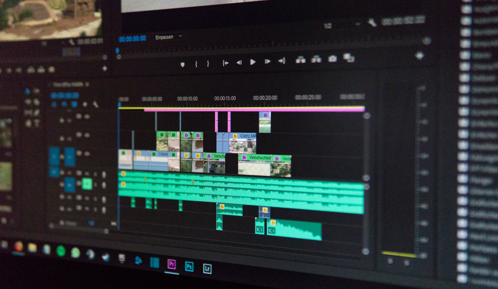

My Tech Stack-In Depth
I jumped into the world of developement with a bit of knowhow from my father who also worked in Silicon Valley in the 80s,90s,00s. I had to learn a lot though on my own. Understanding how things work was never always easy for me at first but through perserverence and determination I learned to swim in this sometimes tricky deceiving world on my own. The breadth of my professional experience has been more on the front end, but my curiosity with connecting dots pushed me to learn more about how the back end works
I have built a few apps that highlight the importance of music and how it creates a conduit of connections and may lead to collaboration. I enjoy playing music with others because its a place like the office can be were you leave your ego at the door and create something that everyone can agree on. Without giving away too much of my app, the goal is to connect people and have them move away from this era of selfinvolvment and collaborate.I want to see more bands out there rather than just the disposable pop stars